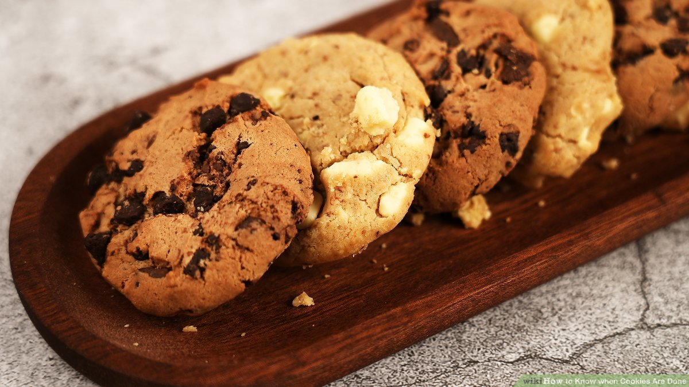

Cookie Recipe
Below is the complete guide to making delicious cookies, including ingredients, instructions, and tips.
Finished Cookie

Image of the finished cookie.
Chef
Chef: Badr Ibraheem
Ingredients
| Ingredient |
Quantity |
| Flour |
2 cups |
| Sugar |
1 cup |
| Butter |
1/2 cup |
| Egg |
1 large |
| Vanilla Extract |
1 tsp |
| Baking Powder |
1 tsp |
| Salt |
1/4 tsp |
Instructions
- Preheat the oven to 350°F (175°C).
- In a mixing bowl, cream together butter and sugar.
- Add the egg and vanilla extract, and mix well.
- In a separate bowl, whisk together flour, baking powder, and salt.
- Gradually add the dry ingredients to the wet ingredients and mix until combined.
- Roll the dough into small balls and place them on a baking sheet lined with parchment paper.
- Bake for 10-12 minutes or until the edges are lightly golden.
- Let the cookies cool on a wire rack before serving.
Best Practices and Tips
- Use room temperature ingredients for better mixing.
- Chill the dough for 15 minutes to prevent spreading.
- Experiment with add-ins like chocolate chips or nuts for variety.
- Always measure ingredients accurately for consistent results.